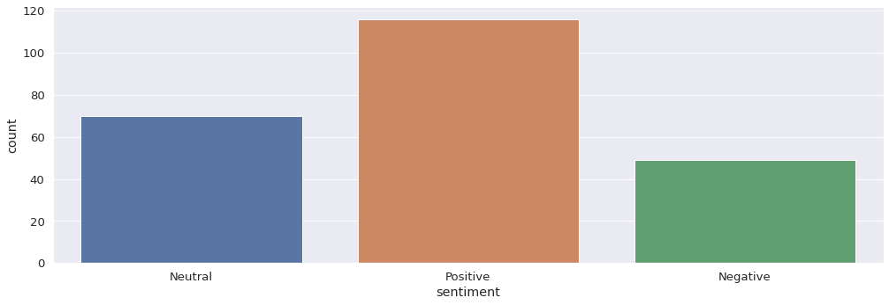
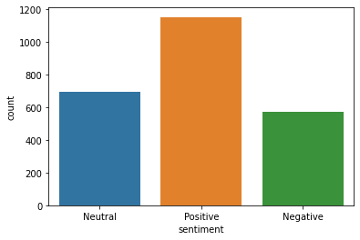
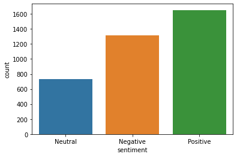
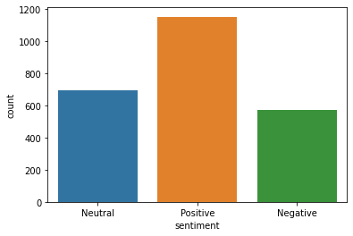
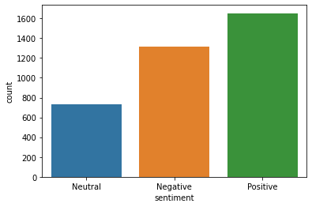
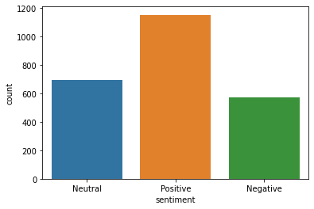
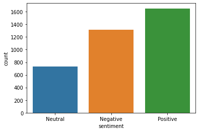

 





The above three graphs shows the final sentiment evaluation of twitter users
opinion related to BSP, Congress, SP and BJP respectively in UP.
BJP and BIJU are in a good position but Congress is in a comparatively lower position.
BJP and BIJU are in a good position but Congress is in a comparatively lower position.